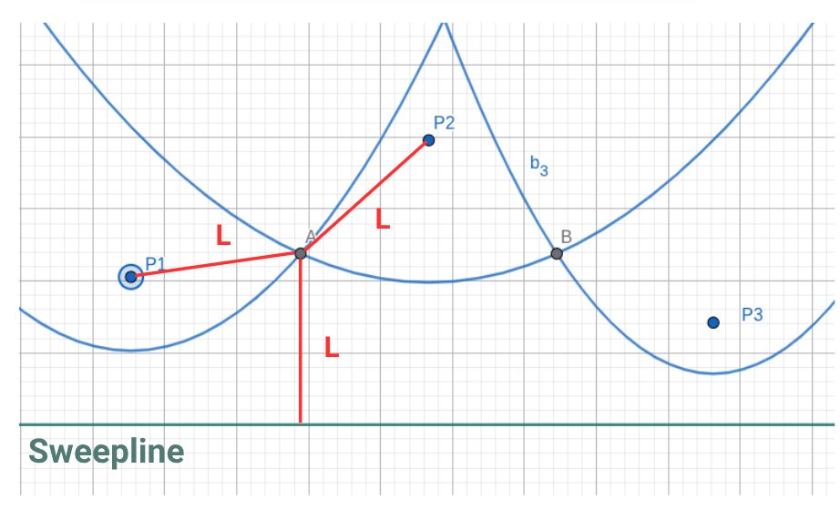

Imagine uma atividade rotineira como fazer uma ligação de vídeo para uma pessoa muito especial (para merecer uma ligação de vídeo, precisa ser especial mesmo). Nesse contexto, uma prioridade é enviar e receber informações com a menor latência possível.
Ao seu redor, existem várias antenas de comunicação para as quais podemos mandar um sinal. Esse sinal vai ser retransmitido por vários pontos ao longo da infraestrutura global de comunicação até chegar no seu destino. A fim de minimizar a latência e aumentar a chance do sinal ser recebido sem perdas, seu celular enviar o sinal para a antena mais próxima.
Seu celular sabe sua posição no mapa e a posição das antenas ao seu redor:
Aviso
Como é descobrimos qual a antena mais próxima de você?
Método das distâncias:
É possível calcular todas as distâncias entre os você e cada um dos pontos utilizando o teorema de pitágoras.
O arquivo dist_m1.py calcula todas essas distâncias e imprime seus valores:
Lugar
Distância
Queda d’água
1.12 km
Riacho
2.92 km
Pedra do sapo
1.80 km
Córrego azul
2.24 km
Rio Branco
2.24 km
Pedra molhada
2.12 km
Lagoa doce
2.55 km
A antena mais próxima seria a Queda d’água com 1.12km de distância
É notável que essa tarefa não é muito eficiente. E, se saíssemos da mesma posição, precisaríamos calcular todas as distâncias novamente.
E se existisse um mapa que indique, para qualquer posição, qual a antena mais próxima?
Subdivisão por células
Vamos começar por um exemplo simples. Temos apenas duas antenas no nosso mapa:
Como podemos dividir esse espaço de modo a indicar, para qualquer ponto no mapa, qual a antena mais próxima?
Pergunta
Pegue um papel e uma caneta e tente desenhar esse diagrama!
Resposta
Vamos traçar uma aresta que passa entre ambas as fontes e pintar de azul todos os pontos em que estão à esquerda dela e de verde aqueles que estão a sua direita:
Agora, sabemos que, se você estiver em qualquer ponto azul, o ponto mais próximo é a Antena A. Se você estiver em qualquer ponto verde, porém, o ponto mais próximo é a Antena B.
Esse princípio
Agora vamos tentar com três pontos:
Pergunta
Pegue um papel e uma caneta e tente desenhar esse diagrama!
Resposta
Se traçarmos uma reta que divide cada um das antenas entre si, podemos criar três arestas que subdividem o espaço em três células distintas.
Observe atentamente esse diagrama e preste atenção nos detalhes:
O cruzamento de todos os segmentos de reta é no baricentro do triangulo formado pelas ligações entre os pontos.
O ângulo entre cada uma das arestas e as retas que ligam 2 pontos é de 90º.
Uma aresta sempre divide ao meio uma reta que liga dois pontos.
Assim, é muito mais fácil ver qual o ponto d’água mais próximo para qualquer ponto do mapa!
Diagrama de Voronoi:
Dividindo pontos com arestas dessa maneira, podemos criar um mapa que nos conta exatamente qual o ponto mais próximo! Esse é o princípio do Diagrama de Voronoi.
Uma das formas mais eficientes de gerar diagramas de Voronoi é com o algoritmo de Fortune. Para entender seu funcionamento, vamos partir de uma ideia diferente — mas calma, no fim tudo fará sentido.
Vamos começar com o exemplo abaixo:
Pergunta
Pegue um papel e caneta e desenhe um ponto pequeno (chamaremos de ponto1), com uma linha horizontal poucos centimetros abaixo e desenhe 5 pontos sobre essa linha (Facilita se você colocar o ponto do meio exatamente embaixo do ponto1). Agora tente encontrar os pontos de equidistancia entre o ponto original e os pontos sobre a linha.
Vai ficar algo parecido com isso:
Agora, tente encontrar os pontos equidistantes entre os pontos da linha e o ponto 1
Resposta
Seu diagrama deve ficar algo parecido com:
Pergunta
Você consegue perceber alguma relação entre esses pontos? Que formato esse padrão formaria?
Resposta
Você deve ter concluido que os pontos de equidistancia formam uma parabola
Agora partimos para um segundo instante. Vamos imaginar que a sweeping line desceu um pouco, para um pouco mais longe do nosso ponto 1.
Pergunta
Tente pensar no que vai acontecer com os pontos e então com a parabola.
Será que ela vai abrir/fechar mais? Será que vai permanecer igual?
Se não estiver conseguindo visualizar, use o papel e compare as respostas. Para que a diferença fique mais clara, faca uma sweeping line bem mais longe do ponto.
Resposta
A parabola vai abrir cada vez mais quando a sweeping line desce.
Caso tenha restado alguma duvida, desenvolvemos um arquivo no Geogebra que facilita muito o entendimento:
Agora que nós deduzimos o comportamento do gráfico para um ponto so, está na hora de acrescentar um segundo ponto.
Agora com dois pontos, desenharemos sua parábola para cada um deles seguindo o mesmo procedimento da etapa anterior. Nosso foco cairá sobre a interseção entre essas parabolas:
Pergunta
Antes de continuar, tente refletir sobre o que esse ponto de interseção significa. Utilizando o conhecimento de como os pontos da parábola são formados.
Resposta
Pergunta
Sabendo disso, imagine a sweeping line descendo em relação a sua posição anterior. Imagine o que pode estar acontecendo com os pontos de interseção.
Desenvolvemos um arquivo do Geogebra que vai ajudar bastante a tirar essa conclusão. Tente encontrar o tipo de relação entre os pontos de interseção com variação da sweeping line.
Dica:
Para obter a resposta, ativar o trace do ponto de interseção.
Você deve ter concluido que os pontos tem uma relação linear uns com os outros. Essa linha que está sendo formada é justamente uma das arestas do diagrama de Voronoi.
Então, conforme a sweeping line desce, o algoritmo está traçando a aresta que divide os dois pontos no diagrama
Pergunta
Então, sabendo isso e do que falamos anteriormente sobre o diagrama de Voronoi, o que conseguimos concluir sobre pontos quaisquer que estão em um dos lados da linha? O que todos tem em comum com os seus respectivos pontos de interesse?
Dica:
Pense na distancia
Resposta
Conseguimos concluir que um ponto qualquer de um dos lados da linha está mais próximo do ponto de interesse que está do mesmo lado do que do outro ponto de interesse.
Parabens, você acabou de entender a lógica por trás de um algoritmo de Fortune para 2 pontos em um grafico!
Antes de adicionarmos um ponto, vamos entender o conceito da beachline.
Como no início do handout, pense nos pontos equidistantes entre um ponto e a sweeping line — eles formam uma parábola. Pensou? Agora imagine duas dessas parábolas. A beachline é formada pelos pontos que estão ao mesmo tempo nas duas parábolas e que estão mais próximos da sweeping line em cada posição no eixo x.
Aqui esta uma imagem que nos ajuda a visualizar isso.
Agora que entendemos o conceito, vamos adicionar um terceiro ponto. A lógica é a mesma para 4, 5 ou mais pontos, então, ao compreendermos o caso com 3, poderemos generalizar para qualquer quantidade.
Criamos um arquivo do Geogebra que facilita essa visualização e entendimento.
Três Pontos
Agora que você já entendeu a lógica para um ponto e para dois pontos, chegou a hora de adicionar o terceiro.
Prepare o papel e a caneta: desenhe três pontos não alinhados — algo como um triângulo.
A sweeping line (linha de varredura) começa acima desses pontos e começa a descer lentamente.
Cada ponto vai gerar sua própria parábola, exatamente como vimos antes.
Pergunta
Desenhe as três parábolas com a sweeping line passando logo abaixo dos pontos.
O que você percebe?
Resposta
Perceba que cada ponto (P₁, P₂ e P₃) gera uma parábola diferente — cada uma representa todos os lugares que estão à mesma distância entre aquele ponto e a sweeping line.
A linha roxa na base, chamada beachline, é formada pelos trechos mais baixos dessas parábolas, isto é, os pontos mais próximos da sweeping line em cada posição no eixo x.
Os pontos A e B são as interseções entre as parábolas — eles marcam os limites entre as regiões de influência dos pontos.
Esses pontos de interseção são o primeiro indício das arestas do Diagrama de Voronoi:
eles mostram onde a influência de um ponto termina e a de outro começa.
O Segredo das Interseções
Vamos observar com mais atenção os pontos A e B.
Eles aparecem exatamente onde as parábolas se cruzam — onde a influência de um ponto começa a dar lugar à de outro.
Esses cruzamentos não são apenas coincidências gráficas; eles têm um significado geométrico profundo.
Para entender o que realmente está acontecendo nesses pontos, precisamos olhar para o que eles representam em termos de distância.
Pergunta
Se um ponto está na interseção de duas parábolas, o que isso significa sobre as distâncias?
Resposta
Esse ponto está equidistante de três elementos:
do Ponto 1,
do Ponto 2,
da sweeping line.
Agora imagine que a sweeping line continua descendo lentamente de ponto a ponto.
Cada vez que ela se move, as parábolas mudam de forma e os pontos de interseção (como A e B) também se deslocam.
Mas há um instante muito especial: o momento em que as três parábolas se encontram em um único ponto.
Pergunta
O que isso significa?
Resposta
Nesse exato ponto, estamos à mesma distância de:
Ponto 1
Ponto 2
Ponto 3
e da sweeping line
É como se o espaço “entrasse em equilíbrio” entre os três pontos — nenhum deles é mais próximo que o outro.
A “Parábola Engolida”
Você já viu que, em um instante específico, as três parábolas se encontram em um mesmo ponto —
aquele ponto que está à mesma distância dos três focos e da sweeping line.
Nesse momento, algo marcante acontece:
a parábola do ponto mais alto desaparece da beachline — ela é “engolida” pelas outras duas.
Pergunta
O que isso significa sobre as distâncias?
Resposta
Esse ponto está à mesma distância dos três focos e da sweeping line.
Se registrássemos todos os pontos que mantêm essa distância constante, formaríamos um contorno fechado.
Pense: qual é a forma geométrica que reúne todos os pontos que estão à mesma distância de um mesmo centro?
Exatamente — um círculo!
O Evento de Círculo
Esse instante especial recebe o nome de evento de círculo (circle event) no algoritmo de Fortune.
Ele marca o momento exato em que uma das parábolas da beachline desaparece —
ou, como se diz, morre.
No mesmo instante, o algoritmo registra o ponto onde isso acontece:
o vértice de Voronoi, o local onde as três células se encontram.
Pergunta
Tente visualizar:
à medida que a sweeping line continua descendo, esse vértice recém-criado fica para trás, como uma marca gravada no mapa.
Enquanto isso, a beachline segue viva — mudando de forma e criando novos vértices conforme mais eventos acontecem.
Cada ponto gera uma parábola conforme a sweeping line desce.
As interseções dessas parábolas formam as arestas do diagrama.
Quando três parábolas se encontram e formam uma circunferência tangente à sweeping line:
O ponto mais distante é “engolido” → evento de círculo;
O cruzamento das três parábolas é salvo → novo vértice de Voronoi.
A beachline continua viva, atualizando-se a cada novo ponto ou evento.
Complexidade
Partindo para o tema de complexidade, vamos começar pensando sobre o numero de pontos de interesse e como ele vai impactar a complexidade
Pergunta
Imagine que estamos criando um diagrama de voronoi com 5 pontos de interesse. Conforme a sweeping line desce, ela vai encontrando eventos.
Quantos eventos principais você acha que teremos nesse caso?
Resposta
Teremos 1 para cada ponto, entao 5 eventos principais.
Pergunta
E se tivessemos 10 pontos de interesse? E 20?
Resposta
Você deve ter percebido que a quantidade de eventos principais é proporcional ao número de pontos de interesse.
Cada ponto gera um novo evento — o algoritmo precisa lidar com todos eles, um por um.
Isso já nos dá uma boa pista sobre a complexidade do algoritmo.
Mas sera que o algoritmo precisa se preocupar com todos os pontos a todo momento? A resposta e não! Essa e a grande diferenca do algoritmo de Fortune para os outros, ele so tem que se preocupar com os pontos vizinhos, então os pontos relativamente proximos da sweeping line
Pergunta
Pensando então que o algoritmo so precisa se preocupar com os pontos vizinhos, o que podemos concluir sobre a complexidade do algoritmo?
Dica 1: Pode ajudar pensar em um algoritmo com 3 pontos e comparar com um algoritmo com 1000. Sera que ele faz o mesmo numero de contas novas para cada ponto de interesse novo que aparece? Ou sera que não esta tudo mais pronto e determinado ja?
Dica 2: Como concluimos anteriormente, a complexidade e parcialmente linear, então sabemos que é O (n * algo)
Resposta
A complexidade e O(n logn).
Podemos concluir isso pensando que, além de lidar com cada ponto uma vez (por isso o n), o algoritmo também precisa manter os eventos em ordem conforme a sweeping line desce.
Mas o que significa “manter em ordem”?
Significa que, a cada novo ponto ou evento de círculo, o algoritmo atualiza sua lista de eventos — inserindo ou removendo itens de forma organizada.
Essas pequenas atualizações explicam o log n na complexidade.
Outros algoritmos para gerar diagramas de Voronoi são menos eficientes que o de Fortune.
Um exemplo é o método direto por distância, que compara cada ponto do plano com todos os sítios e tem complexidade O(n²). Outro é o método incremental, que adiciona os pontos um a um e atualiza o diagrama a cada inserção, também com custo próximo de O(n²).
Por isso, o algoritmo de Fortune se destaca como o mais rápido entre eles, com complexidade O(n log n).